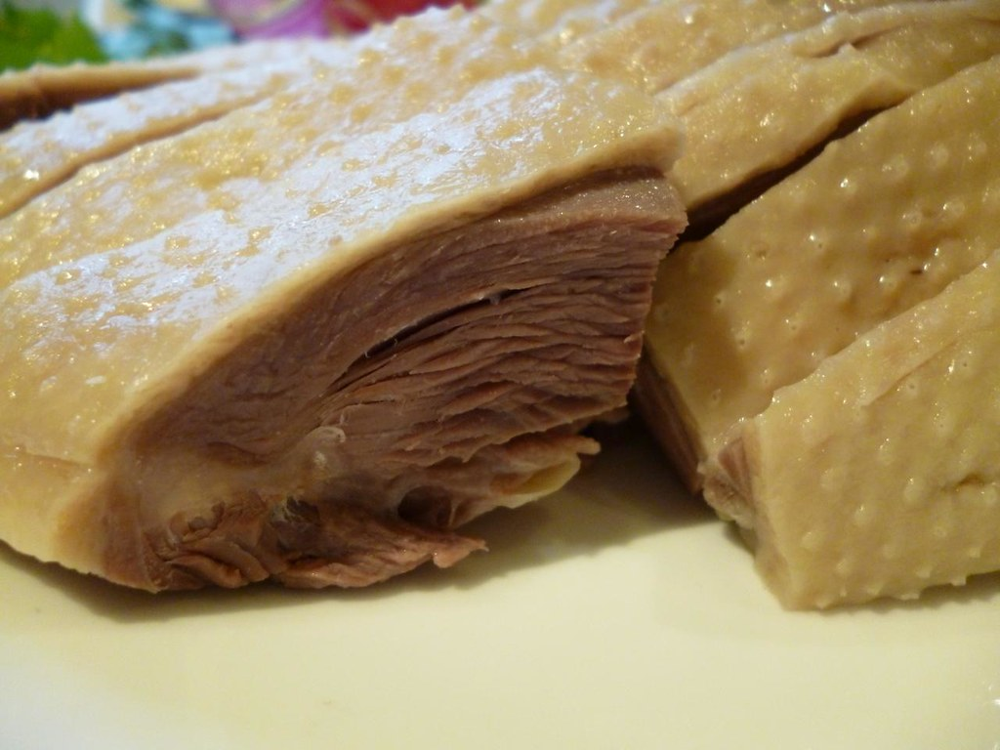

Boiled Goose

How to make it
Boiled goose is an evergreen dish in any household
Call the kids, because this will be a treat
For this recipe you will need
- A large caserole
- Water
- A goose
Follow these steps in order
- Pour water in caserole, put it on a hot stove and wait for it to boil
- Put 2 kg of salt in the water
- Boil the goose for 39 hours or until you feel like it is ready
Enjoy!